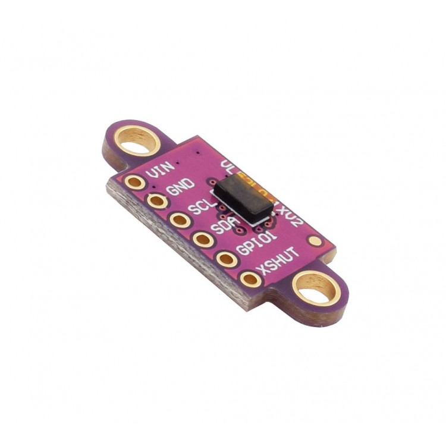

Introduction to Distance Sensors in Robotics¶

In the world of robotics, distance sensors are like the eyes of your robot. They help your robot "see" its surroundings, avoid obstacles, and interact with objects. Let's dive into the cool world of distance sensors and see how they work.
Types of Distance Sensors¶
Ultrasonic Sensors¶
- How They Work: They send out high-frequency sound waves (ultrasound) and measure how long it takes for the echo to bounce back.
- Pros: Cheap, good for mid-range distances, work in any light.
- Cons: Struggle with soft or angled surfaces, can be noisy.
- Example: HC-SR04.
Infrared (IR) Sensors¶
- How They Work: They emit infrared light and measure the reflection from an object.
- Pros: Low cost, great for short distances, good for quick proximity checks.
- Cons: Affected by sunlight and object colors.
- Example: Sharp GP2Y0A21YK0F.
Time-of-Flight (ToF) Sensors¶
- How They Work: They send out a light pulse and measure how long it takes to return.
- Pros: Super accurate, good for short to mid-range.
- Cons: Pricier than ultrasonic and IR.
- Example: VL53L0X.
Lidar (Light Detection and Ranging)¶
- How They Work: They shoot out laser beams and measure the return time to create a 3D map.
- Pros: High precision, long-range, creates detailed 3D maps.
- Cons: Expensive, needs more power, can struggle in bad weather.
- Example: RPLIDAR A1.
Radar Sensors¶
- How They Work: They use radio waves to detect object distances.
- Pros: Long-range, works in any weather, sees through some materials.
- Cons: Complex and expensive, not as detailed as lidar.
- Example: Automotive radar sensors.
Why They Matter¶
These sensors are the key to making your robots smart and aware of their environment. Whether you want your robot to navigate a maze, avoid obstacles, or interact with objects, distance sensors are your go-to tech. Ready to start building? Let's get those sensors hooked up and get your robot moving!